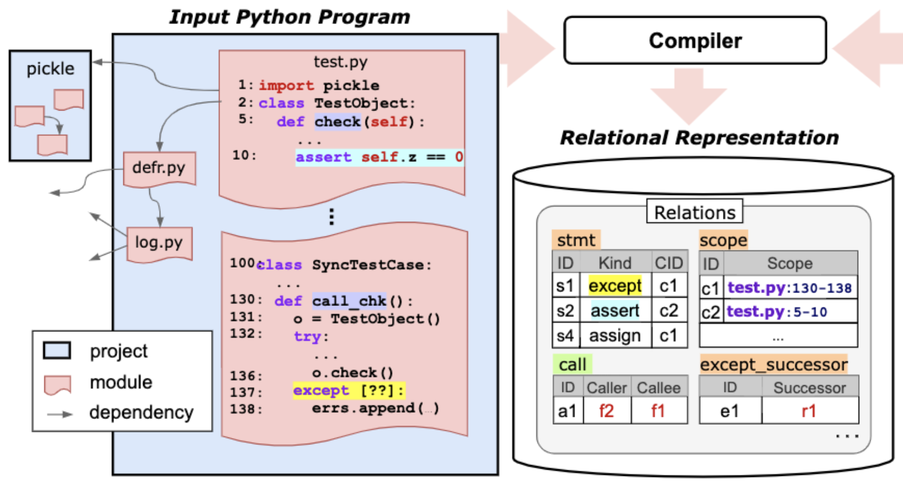
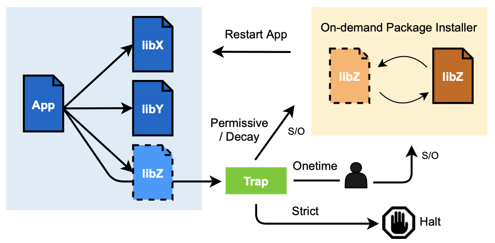
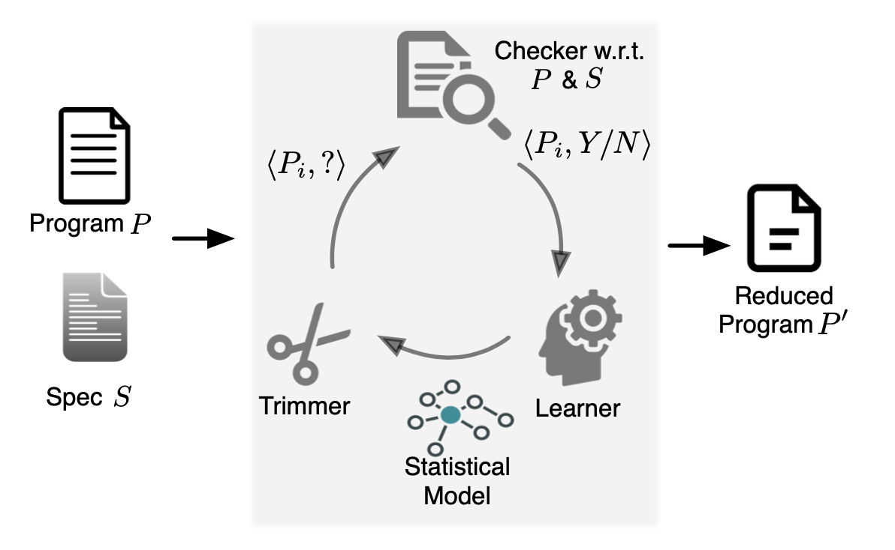

I work on modeling source code with deep learning, together with program analysis and software security, toward code bases that are secure, efficient, and free of defects. My Ph.D. dissertation covers the research in depth.
I am currently an Applied Scientist on the Kiro Science team at AWS, where I work on making AI coding agents safe and reliable using program analysis and deep learning. Kiro is an agentic IDE that brings structure to AI coding through spec-driven development. Three threads of my work there: semantic refactoring tools that drive IDE language servers to perform deterministic code transformations; real-time IDE diagnostics wired into the agent loop, so the agent sees its own mistakes sooner and generates working code faster; and, more recently, validation: the open question of whether generated code actually satisfies the spec it was given rather than merely passing the tests that happen to exist. I have written up the first two in Refactoring made right and Empowering Kiro with IDE diagnostics, then used six months of that diagnostics data to ask Are AI coding agents actually getting better? The case for independent validation is in The Validation Gap.
Previously, I was the Founding AI Engineer at Codemod, where I designed and built automated solutions for large-scale code migrations. I wrote about that work in Automated codemod creation through an iterative AI system, and about individual pieces of it in posts on learning from multiple before and after examples, natural language descriptions, and ts-morph support.
Before that, I was a Senior Software Engineer at CertiK, where I applied my deep learning and program analysis knowledge on finding major vulnerabilities in smart contracts. I created various vulnerability detection tools to help security experts audit and harden solidity contracts. I also engineered an AI-based vulnerability detection framework for Solidity from inception to deployment on the cloud. The performance of this framework encouraged me to continue my research in the field of deep learning for code. One of the most rewarding experiences at CertiK was mentoring an intern in the summer of 2023 to explore the potentials and constraints of GPT-3.5 for code property extraction. You can read my view points on the topic of deep learning for code and code security in my two-part blog post: Part 1 and Part 2.
As part of my research (ICLR'22), I proposed a deep learning technique called CodeTrek that leverages relational databases to robustly represent code. The result is not only a uniform representation of any program information, but also the ability to use SQL-style queries to enrich that information. To better benefit from this rich structural and semantic information, I also developed a guided graph-walk mechanism to extract relevant context. CodeTrek's code understanding models are robust and better at predicting real-world bugs.
Prior to modeling source code, I worked on debloating code bases to reduce software vulnerabilities. Debloating can be beneficial for many types of software because they often contain unnecessary features that would compromise security. Below are two systems I developed for debloating:
- For program-level debloating, I developed Chisel, a framework for reducing programs using user-defined high-level specifications. Chisel relies on reinforcement learning to accelerate large-scale program reduction. Currently, this research is being transitioned from a prototype to a full-fledged product by GrammaTech.
- In order to scale-up software debloating, I created a package-oriented framework called PacJam, which efficiently removes dependent packages while maintaining software functionality, preventing zero-day attacks. For instance, VLC Media Player alone can perform the same function with 45% fewer packages than those that are installed by Debian Package Manager. The situation is even more dire in the Firefox web browser. PacJam enables adaptive and secure management of dependent packages, as well as mitigation of newly discovered security vulnerabilities without compromising the application's functionality.
Producing better software is not just about the tools; it is also about the people who use them to develop software. It is imperative to make technologies such as program reasoning more accessible to developers of all backgrounds. To this end, I assisted in designing the first software analysis course at the University of Pennsylvania. Students from all over the world have studied this course online and on-campus since 2019. Since the Fall of 2019, I have been a teaching assistant for the course. I also presented a tutorial on building program reasoning tools using Z3 constraint solver and LLVM compiler infrastructure at POPL'20.
Highlights



Publications
arXiv preprint (2026)
Paper
Abstract
LLM coding agents operate by constructing trajectories that accumulate reasoning, tool calls, and results to enable multi-step decision-making. However, the conventional append-only trajectory architecture found in practice tightly couples file-read actions with their observations, capturing snapshots that become permanently fixed in the chronological history. As files change through agent edits or concurrent human modifications, these snapshots become stale, causing reasoning errors and causing agents to redundantly re-read files, with each re-read appending yet another copy to the trajectory. To mitigate this, we propose CORVUS, a novel trajectory architecture that decouples file-read actions from their observations by maintaining a synchronized registry of relevant files and injecting only their current contents at each reasoning cycle. This structural change produces significantly lighter-weight trajectories that remain synchronized with the actual codebase state by construction, eliminating redundant file copies and stale snapshots that bloat conventional trajectories. We evaluated CORVUS on SWE-POLYBENCH_VERIFIED and SWE-BENCH PRO across four LLMs, achieving 9-50% reduction in average input tokens per task, 15-32% shorter final prompts, and up to 37% fewer reasoning cycles while maintaining comparable pass rates.
International Conference on Learning Representations (ICLR'22)
Paper . Repository . Poster . Video
Abstract
Designing a suitable representation for code-reasoning tasks is challenging in aspects such as the kinds of program information to model, how to combine them, and how much context to consider. We propose CodeTrek, a deep learning approach that addresses these challenges by representing codebases as databases that conform to rich relational schemas. The relational representation not only allows CodeTrek to uniformly represent diverse kinds of program information, but also to leverage program-analysis queries to derive new semantic relations, which can be readily incorporated without further architectural engineering. CodeTrek embeds this relational representation using a set of walks that can traverse different relations in an unconstrained fashion, and incorporates all relevant attributes along the way. We evaluate CodeTrek on diverse and challenging Python tasks. It outperforms state-of-the-art neural models by 2-19% points.
ACM ASIA Conference on Computer and Communications Security (AsiaCCS'22)
Paper . Repository . Demo . Video . Slides
Abstract
Software in the real world is usually built from other software packages that are managed by a package manager. Package managers facilitate code reusability and programmer productivity but incur significant software bloat by installing excessive dependent packages. This “dependency hell” increases potential security issues and hampers rapid response to newly discovered vulnerabilities. We propose a package-oriented debloating framework, PacJam, for adaptive and security-aware management of an application’s dependent packages. PacJam improves upon existing debloating techniques by providing a configurable fallback mechanism via post-deployment policies. It also elides the need to completely specify the application’s usage scenarios and does not require runtime support. PacJam enables rapid mitigation of newly discovered vulnerabilities with minimal impact on the application's functionality. We evaluate PacJam on 10 popular and diverse Linux applications comprising 575K-39M SLOC each. Compared to a state-of-the-art approach, piecewise debloating, PacJam debloats 66% of the packages per application on average, reducing the attack surface by removing 46% of CVEs and 69% (versus 66%) of gadgets, with significantly less runtime overhead and without the need to install a custom loader.
IFIP/IEEE Symposium on Integrated Network and Service Management (IM'19)
Paper
Abstract
Untrusted network clients can undergo a classification process before they are allowed to use more of a service's resources. Services typically rely on a table to remember the clients' classification. But as the number of clients increases so does the amount of state required to keep track of this classification over time. In this paper we explore the trade-off between data-structure accuracy and network size when needing to remember client state. We present Hashtray--a hash table library that consists of a generic API and instantiations of various kinds of tables-and a system to evaluate and compare different data structures. We evaluate Hashtray in the context of Denial-of-Service mitigation using both a modelled network of 10^6 machines, and a testbed experiment with over 200 hosts connecting to a version of Apache modified to use Hashtray. The system is open-sourced to enable others to extend or build on this work.
15th International Conference on Network and Service Management (CNSM'19)
Paper . Poster . Repository
Abstract
Analysing software and networks can be done using established tools, such as debuggers and packet analysers. However, using established tools to examine network software is difficult and impractical because of the sheer detail the tools present and the performance overheads they typically impose. This makes it difficult to precisely diagnose performance anomalies in network software to identify their causes (is it a DoS attack or a bug?) and determine what needs to be fixed. We present Flowdar: a practical tool for analysing software traces to produce intuitive summaries of network software behaviour by abstracting unimportant details and demultiplexing traces into different sessions' subtraces. Flowdar can use existing state-of-the-art tracing tools for lower overhead during trace gathering for offline analysis. Using Flowdar we can drill down when diagnosing performance anomalies without getting overwhelmed in detail or burdening the system being observed. We show that Flowdar can be applied to existing real-world software and can digest complex behaviour into an intuitive visualisation.
25th ACM Conference on Computer and Communications Security (CCS'18)
Paper . Slides . Poster . Repository . Website
Abstract
Prevalent software engineering practices such as code reuse and the "one-size-fits-all" methodology have contributed to significant and widespread increases in the size and complexity of software. The resulting software bloat has led to decreased performance and increased security vulnerabilities. We propose a system called Chisel to enable programmers to effectively customize and debloat programs. Chisel takes as input a program to be debloated and a high-level specification of its desired functionality. The output is a reduced version of the program that is correct with respect to the specification. Chisel significantly improves upon existing program reduction systems by using a novel reinforcement learning-based approach to accelerate the search for the reduced program and scale to large programs. Our evaluation on a suite of 10 widely used UNIX utility programs each comprising 13-90 KLOC of C source code demonstrates that Chisel is able to successfully remove all unwanted functionalities and reduce attack surfaces. Compared to two state-of-the-art program reducers C-Reduce and Perses, which time out on 6 programs and 2 programs espectively in 12 hours, Chisel runs up to 7.1x and 3.7x faster and finishes on all programs.
Workshop on Forming an Ecosystem Around Software Transformation (FEAST@CCS'18)
Paper
Abstract
"Breaking up" software into a dataflow network of tasks can improve availability and performance by exploiting the flexibility of the resulting graph, more granular resource use, hardware concurrency and modern interconnects. Decomposing legacy systems in this manner is difficult and ad-hoc, however, leading to issues such as weaker consistency and potential data races. Thus it is difficult to build on battle-tested legacy systems. We propose a paradigm and supporting tools for developers to recognize task-level modularity opportunities in software. We use the Apache web server as an example of legacy software to test our ideas. This is a stepping stone towards realizing a vision where automated decision-support tools assist in the decomposition of systems to improve the reuse of components, meet performance targets or exploit the latest hardware devices and topologies.
Workshop Papers
Deep Learning for Code Workshop (DL4C@ICLR'22)
Paper . Poster
Abstract
Information-rich relational graphs have shown great potential in designing effective representations of code for program-understanding tasks. However, the wealth of structural and semantic information in such graphs can overwhelm models, because of their limited input size. A promising approach for overcoming this challenge is to gather presumed-relevant but smaller context from a larger graph, and random walks over graphs was one of the first such approaches discovered. We propose a deep-learning approach that improves upon random walks by learning task-specific walk policies that guide the traversal of the graph towards the most relevant context. In the setting of relational graphs representing programs and their semantic properties, we observe that models that employ learned policies for guiding walks are 6-36% points more accurate than models that employ uniform random walks, and 0.2-3.5% points more accurate than models that employ expert knowledge for guiding the walks.
Service
Program Committee: SpecOps 2026 (Specification-Driven Development Life Cycle track, co-located with SPLASH/ISSTA 2026); SPLASH 2023 Student Research Competition (SRC).
Reviewer: NeurIPS 2026; ICML 2026 (DL4C Workshop); DL4C @ NeurIPS 2025; AMLC 2025 (Amazon Machine Learning Conference).
Tutorial Presenter: POPL'20 TutorialFest: "Building Program Reasoning Tools using LLVM and Z3."
Projects
Experience
Applied Scientist II @ AWS, Santa Clara, CA (October 2024 - present)
I am on the Kiro Science team, where I work on making AI coding agents safe and reliable through program analysis and deep learning.
Founding AI Engineer @ Codemod, Palo Alto, CA (March 2024 - October 2024)
I built end-to-end state-of-the-art AI systems for automating large-scale migrations.
Senior Software Engineer @ Certik, New York, NY (February 2023 - November 2023)
I have created and deployed Solidity vulnerability detection tools using static analysis techniques (e.g., dataflow analysis) and Slither framework. I have engineered an end-to-end AI-based vulnerability detection framework for Solidity from inception to deployment.
I have mentored a summer intern exploring GPT-3.5 potentials and limitations for code property extraction.
Research Intern @ Microsoft Research, Redmond, WA (June 2019 - August 2019)
Supervisor: David Tarditi
I extended the CheckedC compiler by implementing a static analysis to check bounds declarations in annotated C programs.
Research Intern @ Microsoft Research, Redmond, WA (June 2020 - August 2020)
Supervisor: Suman Nath and Shuvendu Lahiri
I investigated false positives in concurrency bug detection as a part of Torch project.
Course Development Assistant @ University of Pennsylvania (October 2019 - May 2020)
Instructor: Mayur Naik
The Software Analysis course (CIS 547) teaches powerful techniques and tools for analyzing modern software--with an emphesis on the tools used in the software industry.
Teaching Assistant
Web 3.0 Security (2022)
Software Analysis (2020-2022)
Software Engineering Lab (2017)
Compiler Design (2015-2016)
Numerical Methods (2015-2016)
Fundamentals of Programming (2013-2014)
Relevant Coursework
Deep Learning,
Machine Learning,
Software Systems,
SW/HW Support for Security,
Advanced Topics in Databases,
Software Analysis and Testing,
Software Foundations (PL),
Compiler Design,
Theory of Computation,
Logic and Computability,
Statistics.
Education
Ph.D. in Computer Science @ University of Pennsylvania (2017-2023, advisor: Mayur Naik)
B.Sc. in Software Engineering @ Sharif University of Technology (2012-2017)